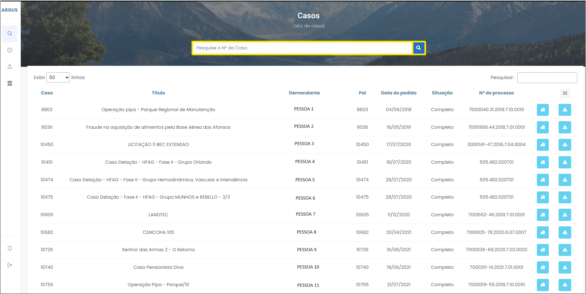
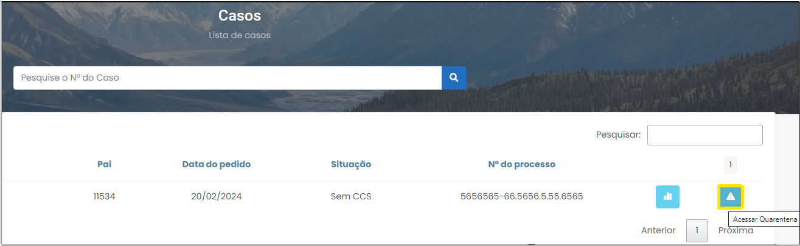

Iniciando o processo de quarentena
1 Para pesquisar um caso desejado, digite o N° do Caso no campo localizado no centro da página (Figura 5).

Figura 5 - Procurar casos.
2 Em seguida, clique em "Acessar Quarentena", no pedido desejado (Figura 6).

Figura 6 - Acessar Quarentena.
Cabeçalho

Figura 7 - Cabeçalho.
Itens do cabeçalho
- Título: nome ilustrativo da investigação que facilita a identificação do seu objeto.
- Status: andamento do caso dentro da linha de produção do relatório de análise. O status pode assumir os seguintes tipos: "Análise", "Pendente", "Concluído", "Encerrado", "Quarentena" ou "Novo".
- Período: intervalo definido no cadastro do pedido que limita os termos iniciais e finais da investigação.
- Data do pedido: momento em que o pedido foi elaborado pelo demandante.
- Lotação: procuradoria ou auditoria de origem do procedimento investigatório.
- Solicitante: demandante que cadastrou o PAI.
Botões
- Botão "CCS": é possível baixar os arquivos transmitidos pelo Banco Central que servirão de base para a demanda das contas devidas pelas IFs. Além disso, é possível baixar o PQS (pedido de quebra de sigilo) ou a decisão judicial que deferiu a quebra ou o ofício judicial. Esses documentos servirão como base jurídica para validação dos dados transmitidos e para a cobrança das instituições financeiras.
- Botão "Quebras": é possível baixar os arquivos transmitidos pelos bancos e também se obter alguns documentos encaminhados (ex. fatura de cartão, ficha de abertura de conta, extratos de investimento), que estão fora do padrão da Carta-Circular nº 3454/2010.
Salienta-se que esta Circular é uma norma jurídica do Banco Central que estabele um padrão de prestação de informação das instituições financeiras ao Poder Público. Ela visa a uniformizar o formato tecnológico de remessa de dados bancários.